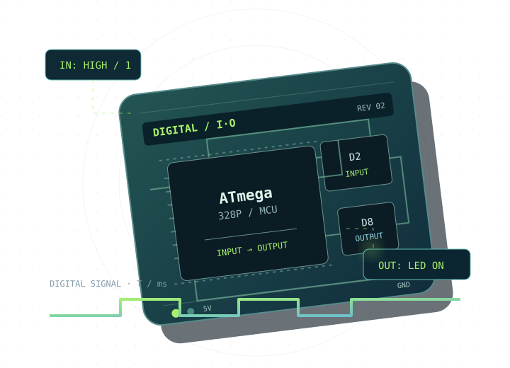

Nadväznosť učiva
Postupujte od orientácie v doske a IDE cez simuláciu, GPIO a podmienky k reprezentácii bitov, typom, EEPROM a ukazovateľom. Cvičenia 1.17 a 1.18 možno využiť ako samostatnú dvojhodinu.
UČITEĽSKÝ PREHĽAD · SKRYTÉ V POHĽADE ŽIAKA
Postupujte od orientácie v doske a IDE cez simuláciu, GPIO a podmienky k reprezentácii bitov, typom, EEPROM a ukazovateľom. Cvičenia 1.17 a 1.18 možno využiť ako samostatnú dvojhodinu.
Pri každom cvičení nech žiak najskôr vysloví predpoveď, následne upraví jednu vec a porovná výsledok s očakávaním. Stránka konkrétnej témy ponúka 45-minútový plán, dôkaz učenia aj rozširujúcu úlohu.
Google Forms nie sú v tomto archíve automaticky konfigurované; dostupný je manuálny návod. Tabuľku s menami a známkami nezdieľajte so žiakmi; študentom posielajte iba odkaz na vyplnenie formulára.
Otvoriť návod pre Google Forms →KOMPLETNÝ PRAKTICKÝ KURZ · 18 TÉM
Postupná cesta od zoznámenia s vývojovou doskou až po bity, pamäť a ukazovatele. Každá téma obsahuje krátky teoretický základ, ciele, praktické zadanie a kontrolu porozumenia.

Dva režimy vstupu, jeden experiment s LED a časový priebeh, ktorý reaguje na stlačenie tlačidla.
MAPA UČIVA
Označenie 1 / 1 pri téme znamená jeden plánovaný výstup cvičenia v tejto online osnove; číslo pri 1.1 zachováva pôvodný údaj zo zadania. Učivo je rozdelené do piatich nadväzujúcich celkov. Témy 1.17 a 1.18 majú pripravené samostatné 45-minútové hodiny.
1 · VÝVOJOVÉ PROSTREDIA, SIMULÁCIA A PROGRAMOVANIE
Vyber tému a otvor jej materiál. Postup, zadania a výsledky sú prispôsobené práci s Arduinom Uno; pri simulácii možno použiť školou zvolený simulátor.
ZAČÍNAME S DOSKOU A IDE
VSTUP → ROZHODNUTIE → VÝSTUP
ČÍSELNÉ SÚSTAVY A PRÁCA S BITMI
PAMÄŤ, ADRESY A POKRAČOVANIE
DVE SAMOSTATNÉ HODINY · SPOLU 90 MIN
DIGITÁLNE VSTUPY A VÝSTUPY
Teória, bezpečné zapojenie, päť školských projektov, krátky kvíz a kritériá úspechu.
Otvoriť 1. vyučovaciu hodinuPULL-UP / PULL-DOWN
Plávajúci vstup, porovnanie rezistorových zapojení, interaktívny model a päť projektových kariet.
Otvoriť 2. vyučovaciu hodinuPRIMÁRNE ZDROJE · ARDUINO
Materiály sú vysvetlené vlastnými slovami. Odkazy vedú na oficiálnu dokumentáciu Arduino a výrobcom zverejnené technické informácie.
ZÁVEREČNÉ PRECVIČENIE
Päť zadaní so stupňujúcou sa náročnosťou, jednotnými kritériami hodnotenia a alternatívou bez fyzickej dosky.
UČITEĽSKÝ NÁSTROJ · GOOGLE FORMS
Automatické vytváranie Google Forms nie je súčasťou tohto balíka. Návod vysvetľuje obmedzenie a bezpečný manuálny postup.